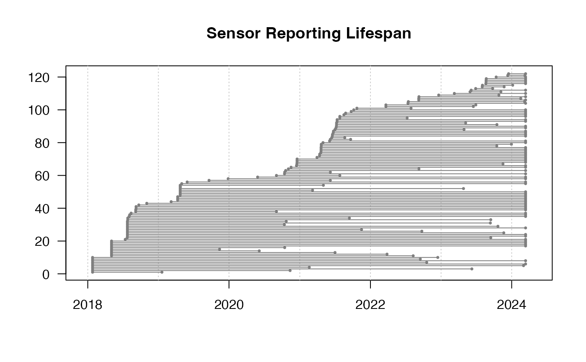
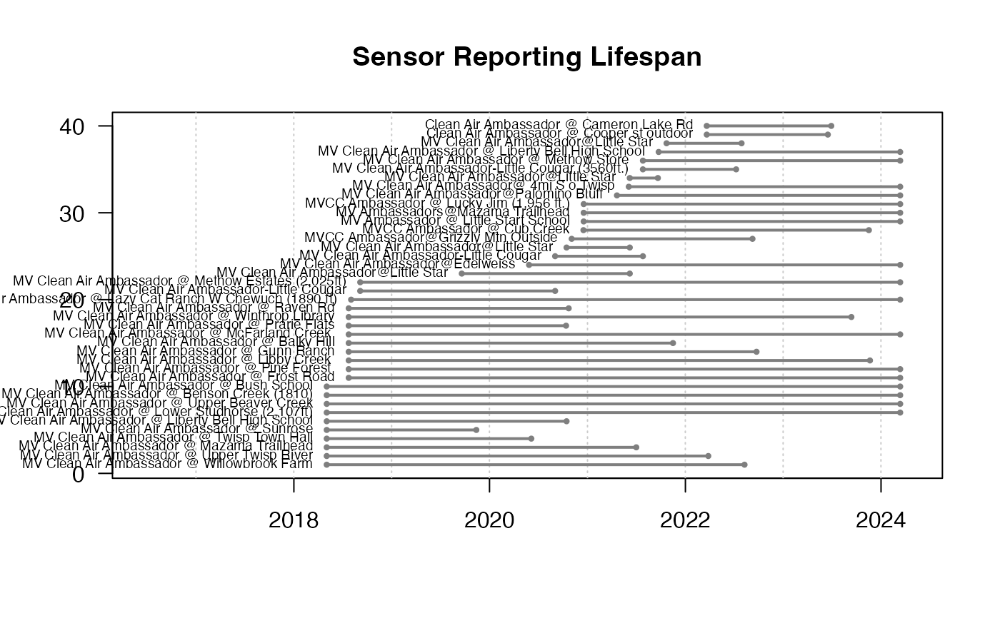
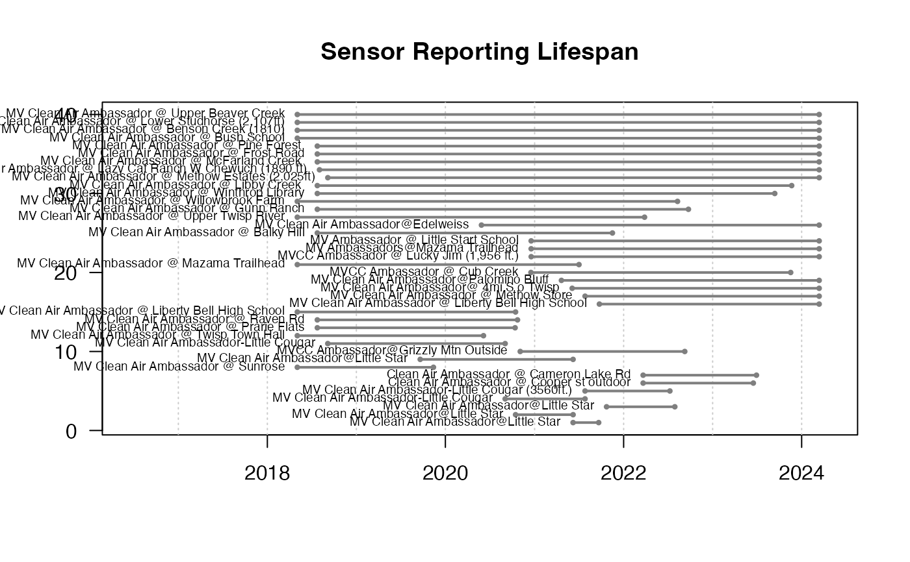

R/pas_lifespanPlot.R
pas_lifespanPlot.RdPlots the lifespan of PurpleAir sensors -- the time range
between pas$date_created and pas$last_seen. You can use
dplyr::filter and dplyr::arrange() to pre-process the pas
dataframe to generate informative results
When showSensor = TRUE, typical values for sensorIdentifier would
be either sensorIndex or locationName.
pas_lifespanPlot(
pas,
showSensor = FALSE,
sensorIdentifier = "sensor_index",
moreSpace = 0,
...
)PurpleAir Synoptic pas object.
Logical specifying inclusion of pas$sensor_index in the plot.
Name of the column to use when identifying a sensor.
Fractional amount which to expand the time axis so as to allow more room for sensorIdentifiers.
Additional arguments to be passed to graphics::plot.default().
No return value. This function is called to create a plot on the active graphics device.
library(AirSensor2)
# Plot all lifespans
example_pas_historical %>%
pas_lifespanPlot()

# Methow Valley Clean Air Ambassador sensors
example_pas_historical %>%
pas_filter(stringr::str_detect(locationName, "Ambassador")) %>%
pas_lifespanPlot(
showSensor = TRUE,
sensorIdentifier = "locationName",
cex = .6,
lwd = 2,
moreSpace = .3
)

# Arrange by lifespan
example_pas_historical %>%
pas_filter(stringr::str_detect(locationName, "Ambassador")) %>%
dplyr::mutate(lifespan = last_seen - date_created) %>%
dplyr::arrange(lifespan) %>%
pas_lifespanPlot(
showSensor = TRUE,
sensorIdentifier = "locationName",
cex = .6,
lwd = 2,
moreSpace = .3
)
